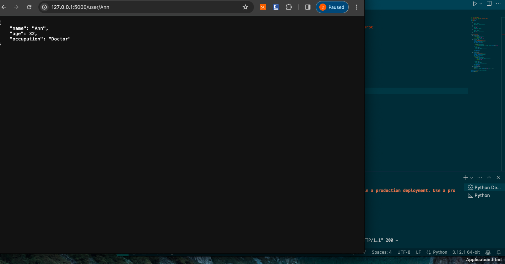
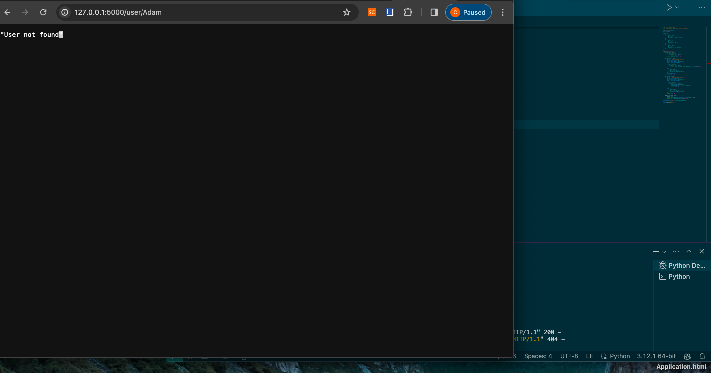
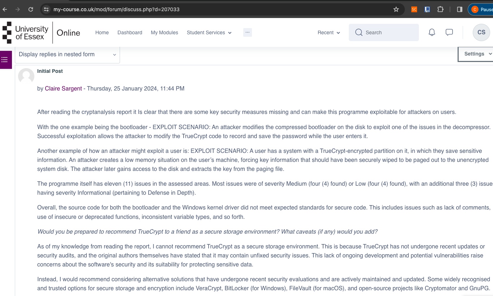
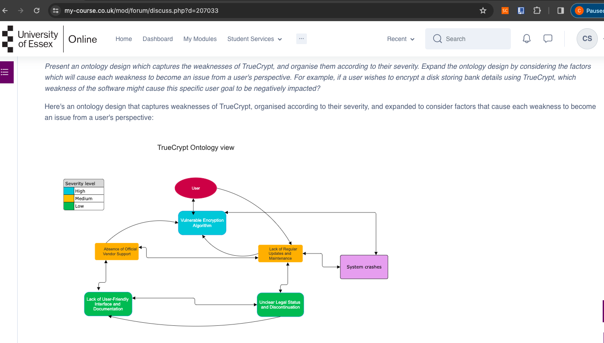
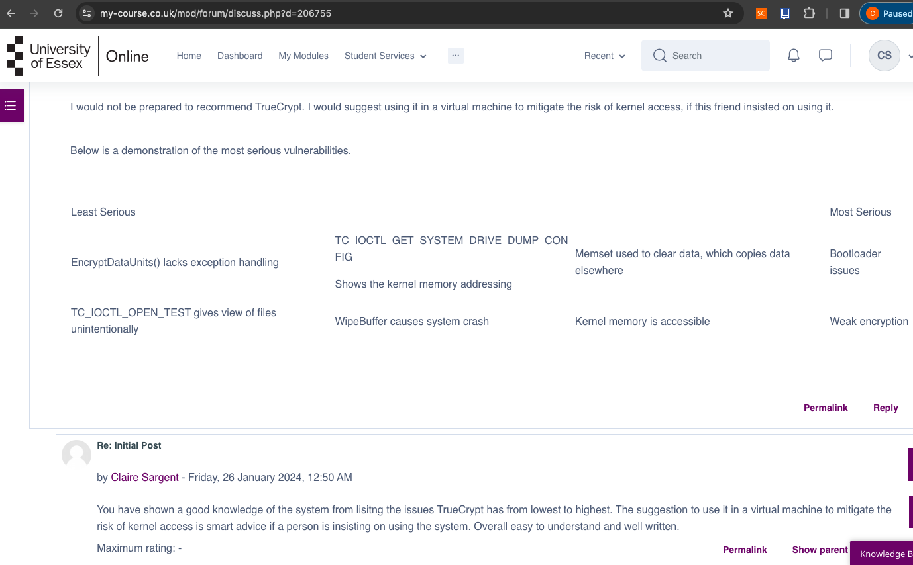

Secure Software Development
Module 3
Unit 1: Introduction to Secure Software Development
Discussion post:


 Unit 2: UML Modelling to Support Secure System Planning
Unit 2: UML Modelling to Support Secure System Planning
Peer responses:

 Seminar activities:
Question 2: Blog Post (also e-portfolio activity)
Seminar activities:
Question 2: Blog Post (also e-portfolio activity)
Some say that people are the biggest risk of cyber security.
Five terms from ISO/IEC Standard 27000 Section 3 Terms and Definitions related to the topic of cyber security and the human factor:
The cycle to help with continued improvement.
P-plan
D-do
C-check
A-act
These terms highlight the importance of considering the human factor in cyber security, including the role of users, the need for awareness and competence,
the value of training, and the establishment of responsibilities and accountability within organisations.
Dealing with the human factor in information security is crucial for establishing a robust security posture.
Here are some key measures and best practices to address the human factor:
1. Security Awareness Training: Provide regular and comprehensive security awareness training to all employees.
This should cover topics such as recognising phishing emails, identifying social engineering techniques, practicing strong password management,
and adhering to security policies and procedures. Training should be engaging, relevant, and tailored to different roles and responsibilities
within the organisation.
2. Establish Security Policies and Procedures: Develop and communicate clear security policies and procedures that outline expected behaviours and
responsibilities related to information security. These policies should cover areas such as acceptable use of technology, handling of sensitive data,
access controls, incident reporting, and remote work security. Ensure that employees understand and adhere to these policies through regular reinforcement and reminders.
3. Role-Based Access Controls: Implement role-based access controls (RBAC) to ensure that employees have access only to the resources and information necessary for their job functions.
Regularly review and update access privileges based on changes in job roles or responsibilities. This helps minimise the risk of unauthorised access or data leakage.
4. Incident Response and Reporting: Establish a clear incident response process and encourage employees to promptly report any security incidents, suspicious activities,
or potential vulnerabilities they come across. Create a culture where reporting security concerns is encouraged and not met with punishment.
This enables timely response and mitigation of security incidents before they escalate.
5. Continuous Monitoring and Auditing: Implement systems for monitoring and auditing user activities, network traffic, and access logs to identify any unusual or suspicious behaviour.
This can help detect and prevent security breaches caused by insiders or external threats that exploit human vulnerabilities.
Regularly review and analyse monitoring and audit logs to identify potential risks or policy violations.
6. Employee Engagement and Communication: Foster a culture of security within the organisation by engaging employees in security initiatives and decision-making processes.
Encourage open communication channels where employees can ask questions, seek guidance, and report security concerns without fear of retribution.
Regularly communicate security updates, best practices, and success stories to keep security top-of-mind for employees.
7. Third-Party Management: Extend security considerations to third-party vendors and contractors who have access to your systems or data.
Implement due diligence processes to assess the security practices of third-party entities and include security requirements in contracts and service level agreements.
Regularly review and monitor their compliance with security standards.
By implementing these measures, organisations can effectively address the human factor in information security and minimise the risk of security breaches caused by human error,
social engineering, or insider threats. It is important to continuously evaluate and update these measures to keep pace with evolving security threats and industry best practices.
Unit 3: Programming Languages: History, Concepts & Design
Team discussion:
We had to read chapters 2,6,7,8 of the course text (Pillai, 2017) and Cifuentes & Bierman (2019) and then answer the questions below.
1. What factors determine whether a programming language is secure or not?
2. Could Python be classed as a secure language? Justify your answer.
3. Python would be a better language to create operating systems than C. Discuss.
Within our team we each answered the questions sepeartely, then shared our answers in our group discussion forum.
Once we had all read one anothers, we then discussed similiarties and differences we had in our answers.
We all agreed, in the end that C is a more secure programming language compared to Python but that fundamentaly
most security comes down to the programmer and their skills not the software.
Codio labs:
Buffer overflow in C:
The error message "*** stack smashing detected ***: \
terminated" indicates that the program has encountered a stack-based buffer overflow,
which occurs when more data is written into a buffer than it can hold. This causes the excess data to overwrite adjacent memory locations on the stack,
potentially leading to program termination or security vulnerabilities. The "Aborted (core dumped)" part of the message indicates that the program was
forcibly terminated by the operating system, and a core dump file was created for debugging purposes. To fix this issue, the program's code needs to be carefully
reviewed to identify and address the buffer overflow, ensuring proper handling of buffer sizes and bounds checking to prevent writing beyond allocated memory.
This will improve the program's stability and security.
Buffer overflow in Python:
The error message "Traceback (most recent call last): File 'Overflow.py', line 3, in buffer[i]=7 IndexError: list assignment index out of range"
indicates that an IndexError occurred in the Python program "Overflow.py".
The error has occurred on line 3 of the program. The programme is trying to assign a value (7) to an index (i) in a list (buffer) that is out of range.
The index value provided is greater than or equal to the length of the list.
To fix the issue, the index that is being uses to access the list falls within its valid range. The index value needs to be less than the length of the list (taking into account zero-based indexing).
Once pip has been installed here is what happens.
1. "Building wheels for collected packages: typed-ast": The installation process is building "wheels" (a binary distribution format in Python) for the package named "typed-ast".
This step is necessary to compile the package for the specific platform.
2. "Running setup.py bdist_wheel for typed-ast ...done": The setup.py script for the "typed-ast" package is being executed to create the wheel distribution,
and it was completed successfully.
3. "Stored in directory: /home/codio/.cache/pip/wheels/a0/57/54/6c037af50d26591734cd3024784a7caab619474ea4a7c22ab4": The resulting wheel file for the "typed-ast"
package was stored in the specified directory.
4. "Successfully built typed-ast": The "typed-ast" package was built successfully.
5. "Installing collected packages": The installation process is now proceeding to install the packages listed after this line.
6. The subsequent lines list the packages that are being installed. Each line shows the name of the package followed by its version number.
Based on the provided output, the installation process was successful, and the listed packages have been installed with their respective versions.
Unit 4: Exploring Programming Language Concepts
What is ReDOS and what part do ‘Evil Regex’ play?
ReDOS (Regular Expression Denial of Service) is a vulnerability that occurs when a particular regular expression pattern is susceptible to exponential backtracking.
It can lead to significant performance degradation or even denial of service due to the excessive amount of time and resources consumed by the regex engine to process certain inputs.
ReDOS vulnerabilities can be exploited by crafting input strings that trigger the worst-case scenario for the regex pattern,
causing the regex engine to spend an excessive amount of time evaluating the input (Larson & Kirk, 2016).
What are the common problems associated with the use of regex? How can these be mitigated?
"Evil Regex" refers to regular expressions that are intentionally crafted to exploit ReDOS vulnerabilities.
These malicious regex patterns are designed to cause excessive backtracking, leading to denial of service or severe performance degradation when processing specific inputs (Larson & Kirk, 2016).
How and why could regex be used as part of a security solution?
Common problems associated with the use of regex include:
a. Exponential Backtracking: Certain regex patterns can exhibit exponential backtracking, causing the regex engine to spend an inordinate amount of time processing input strings.
b. Catastrophic Backtracking: This occurs when a regex pattern has multiple valid interpretations for a given input, leading to inefficient matching and performance issues.
c. Inadequate Input Validation: Improper use of regex can lead to insufficient input validation, allowing potentially malicious input to bypass security checks.
d. Complexity and Maintainability: Complex regex patterns can be challenging to understand, debug, and maintain over time, leading to code readability issues and potential bugs.
To mitigate these problems, the following steps can be taken:
a. Optimize Regex Patterns: Analyse and optimise regex patterns to avoid excessive backtracking and catastrophic backtracking.
This involves structuring patterns to minimise ambiguity and unnecessary complexity.
b. Input Length Limitations: Enforce input length limitations and implement proper input validation to prevent long inputs from triggering excessive backtracking.
c. Use Regex Engines with Backtracking Limits: Employ regex engines or libraries that provide backtracking
limits or timeouts to prevent regex evaluation from consuming excessive resources.
d. Thorough Testing: Perform comprehensive testing of regex patterns with various input scenarios, including edge cases and long inputs,
to identify and address potential performance issues.
4. Regex can be used as part of a security solution for various purposes:
a. Input Validation and Filtering: Regex can be employed to validate and filter user inputs,
protecting against common security vulnerabilities such as injection attacks (e.g., SQL injection, cross-site scripting) by ensuring that inputs meet expected patterns.
b. Log Analysis and Intrusion Detection: Regex can be used to analyse logs and detect patterns indicative of security breaches or intrusion attempts.
This can aid in identifying and responding to potential security incidents.
c. Data Sanitisation: Regex can help sanitize and scrub sensitive information, such as personally identifiable information (PII) or credit card numbers,
from data sets to protect privacy and comply with data protection regulations.
d. Web Application Firewall (WAF) Rules: Regex patterns can be used in web application firewalls to create rules for
blocking or allowing specific types of requests based on predefined patterns, helping to protect against common web application attacks.
However, it's important to note that regex should be used judiciously and with caution. Proper validation,
testing, and understanding of regex patterns are essential to avoid introducing vulnerabilities or performance issues.
References:
Larson, E. and Kirk, A. (2016) ‘Generating evil test strings for regular expressions’,
2016 IEEE International Conference on Software Testing, Verification and Validation (ICST) [Preprint]. doi:10.1109/icst.2016.29.
The Producer-Consumer Mechanism Questions
1. How is the queue data structure used to achieve the purpose of the code?
In the provided code, the `Queue` data structure from the `queue` module is used to facilitate communication and coordination between the producer and consumer threads.
2. What is the purpose of q.put(I)?
`q.put(i)`: The purpose of `q.put(i)` is to add an item (`i`) to the queue. In this code, the producer thread (`producer()`) iterates over a range of numbers and puts each number into the queue (`q`).
This simulates producing items and adding them to the shared queue for consumption by the consumer threads.
3. What is achieved by q.get()?
`q.get()`: The function `q.get()` is used by the consumer threads to retrieve an item from the queue. In this code, the consumer threads (`consumer()`)
continuously fetch items from the queue (`q`) using `q.get()`. The consumer threads will block if the queue is empty until an item becomes available for consumption.
4. What functionality is provided by q.join()?
`q.join()`: The `q.join()` function is used to block until all items in the queue have been processed and marked as done using `q.task_done()`.
This ensures that the producer waits until all items have been consumed and processed by the consumer threads before proceeding.
In other words, the `q.join()` call blocks the main thread until the queue is empty and all tasks are marked as done.
5. Extend this producer-consumer code to make the producer-consumer scenario available in a secure way.
What technique(s) would be appropriate to apply?
By using the `Queue` data structure, the producer and consumer threads can safely communicate and coordinate their actions.
The producer adds items to the queue, and the consumer threads retrieve items from the queue, process them, and mark them as done.
The `Queue` ensures that the operations are synchronised and thread-safe, preventing potential race conditions or conflicts between the threads.
from threading import Thread
from queue import Queue
from multiprocessing import Lock
q = Queue()
final_results = []
lock = Lock()
def producer():
for i in range(100):
q.put(i)
def consumer():
while True:
number = q.get()
result = (number, number**2)
with lock:
final_results.append(result)
q.task_done()
def run_producer_consumer():
# Start consumer threads
for i in range(5):
t = Thread(target=consumer)
t.daemon = True
t.start()
producer()
# Wait for all tasks to be processed
q.join()
# Print final results
print(final_results)
In the extended code, the following techniques have been applied:
1. **Threading**: The code utilises the `Thread` class from the `threading` module to implement concurrent execution.
The `consumer` function is executed in multiple threads, allowing for parallel processing of items from the queue.
2. **Queue**: The `Queue` class from the `queue` module is used to facilitate communication and synchronisation between the producer and consumer threads.
The `Queue` provides a thread-safe way to store and retrieve items, ensuring proper coordination in the producer-consumer scenario.
3. **Locking**: The `Lock` class from the `multiprocessing` module is used to create a lock object (`lock`) that is used to protect access to the `final_results` list.
By using the `with lock` statement, only one thread can append a result to the `final_results` list at a time, preventing potential conflicts or race conditions.
Unit 5: An Introduction to Testing
Exploring the Cyclomatic Complexity’s Relevance Today
The Cyclomatic Complexity is commonly considered in modules on testing the validity of code design today.
However, in your opinion, should it be? Does it remain relevant today? Specific to the focus of this module, is it relevant in our quest to develop secure software?
Cyclomatic Complexity is a metric used to measure code complexity, it is relevant in code design for maintainability and testability purposes.
High complexity can make code harder to understand, maintain, and test thoroughly. Considering Cyclomatic Complexity helps identify areas that may benefit from refactoring or improved design.
However, Cyclomatic Complexity has limitations. It focuses solely on structural complexity and doesn't capture other dimensions of complexity.
Additionally, the appropriate complexity threshold varies depending on the context, making it a context-dependent metric.
The advised number of levels is less than ten and over ten it is encouraged to refracture the code.
Regarding security, while reducing complexity can contribute to improved security by enhancing code manageability and analysis,
Cyclomatic Complexity alone does not directly address security concerns. Developing secure software requires a holistic approach that considers factors such as input validation,
authentication, secure communication, and adherence to secure coding practices.
In conclusion, Cyclomatic Complexity remains relevant as a code quality metric, aiding maintainability and testability.
However, it should not be the sole determinant of code design decisions. Developing secure software necessitates considering a wider range of
security-specific factors alongside Cyclomatic Complexity analysis.
References:
Antinyan, V. et al. (2017) Evaluating code complexity triggers, use of complexity measures and the influence of code complexity on maintenance time.
Empirical software engineering : an international journal. [Online] 22 (6), 3057–3087.
Shepperd, M. (1988) A Critique of Cyclomatic Complexity as a Software Metric, Software Engineering Journal.
Unit 6: Using Linters to Support Python Testing
Exploring Linters to Support Testing in Python: Question 1
When running the equivalence.py the message in the terminal is - File "equivalence.py", line 14
"""
^
IndentationError: expected an indented block
codio@matrixponcho-carbontemple:~/workspace$
The error message indicates an "IndentationError" in the code.
Correct indentation is crucial for the structure and readability of the code.
The error specifically states that an indented block was expected after line 14, which is the line containing the triple double-quoted string (""").
To resolve this error, there needs to be an indented block of code following the line with the triple double-quoted string.
Below is the corrected code with the triple double-quoted string indented and on the correct line.
def equivalence_partition(iterable, relation):
"""
Partitions a set of objects into equivalence classes
Args:
iterable: collection of objects to be partitioned
relation: equivalence relation. I.e. relation(o1,o2) evaluates to True
if and only if o1 and o2 are equivalent
Returns: classes, partitions
classes: A sequence of sets. Each one is an equivalence class
partitions: A dictionary mapping objects to equivalence classes
"""
classes = []
partitions = {}
for o in iterable: # for each object
# find the class it is in
found = False
for c in classes:
if relation(next(iter(c)), o): # is it equivalent to this class?
c.add(o)
partitions[o] = c
found = True
break
if not found: # it is in a new class
classes.append(set([o]))
partitions[o] = classes[-1]
return classes, partitions
def equivalence_enumeration(iterable, relation):
"""
Partitions a set of objects into equivalence classes
Same as equivalence_partition() but also numbers the classes.
Args:
iterable: collection of objects to be partitioned
relation: equivalence relation. I.e. relation(o1,o2) evaluates to True
if and only if o1 and o2 are equivalent
Returns: classes, partitions, ids
classes: A sequence of sets. Each one is an equivalence class
partitions: A dictionary mapping objects to equivalence classes
ids: A dictionary mapping objects to the indices of their equivalence classes
"""
classes, partitions = equivalence_partition(iterable, relation)
ids = {}
for i, c in enumerate(classes):
for o in c:
ids[o] = i
return classes, partitions, ids
def check_equivalence_partition(classes, partitions, relation):
"""Checks that a partition is consistent under the relationship"""
for o, c in partitions.items():
for _c in classes:
assert (o in _c) ^ (not _c is c)
for c1 in classes:
for o1 in c1:
for c2 in classes:
for o2 in c2:
assert (c1 is c2) ^ (not relation(o1, o2))
def test_equivalence_partition():
relation = lambda x, y: (x - y) % 4 == 0
classes, partitions = equivalence_partition(
range(-3, 5),
relation
)
check_equivalence_partition(classes, partitions, relation)
for c in classes:
print(c)
for o, c in partitions.items():
print(o, ':', c)
if __name__ == '__main__':
test_equivalence_partition()
Exploring Linters to Support Testing in Python: Question 2
This is the response when running the code pylintTest.py:
codio@matrixponcho-carbontemple:~/workspace$ python3 pylintTest.py
File "pylintTest.py", line 26
print encoded
^
SyntaxError: Missing parentheses in call to 'print'. Did you mean print(encoded)?
codio@matrixponcho-carbontemple:~/workspace$ python3 pylintTest.py
Traceback (most recent call last):
File "pylintTest.py", line 7, in
choice = raw_input("would you like to encode or decode?")
NameError: name 'raw_input' is not defined
codio@matrixponcho-carbontemple:~/workspace$ python3 pylintTest.py
Line 26 original – print encoded
Correction - print (encoded)
Needed the correct parentheses
Line 7 original – choice = raw-input ("would you like to encode or decode?")
word = raw-input ("Please enter text"))
Correction –
choice = input ("would you like to encode or decode?")
word = input ("Please enter text")
Raw input was is not defined in the code only input
Exploring Linters to Support Testing in Python: Question 3
SyntaxError: Missing parentheses in call to 'print'. Did you mean print(encoded)?
codio@matrixponcho-carbontemple:~/workspace$
When you install pip install flake8 it shows the above message in the terminal when ran, it suggests what could be
wrong with the code unlike the pylint it just tells you there is an error on the line of code that needs fixed.
Next when looking over the metricTest.py code there are multiple corrections between syntax errors and indentation.
Firstly, I went through and removed the numbers at the beginning of each line of code, then I went through correcting syntax and indentation
with the help of the flake 8.
Exploring Linters to Support Testing in Python: Question 4
Run mccabe on sums.py. What is the result?
codio@matrixponcho-carbontemple:~/workspace$ pip3 install mccabe
Collecting mccabe
Using cached https://files.pythonhosted.org/packages/27/1a/1f68f9ba0c207934b35b86a8ca3aad8395a3d6dd7921c0686e23853ff5a9/mccabe-0.7.0-py2.py3-none-any.whl
Installing collected packages: mccabe
Successfully installed mccabe-0.7.0
codio@matrixponcho-carbontemple:~/workspace$ python3 sums.py
Everything passed
This is what is fed back through the terminal but when mccabe is ran it has fixed the problem as shown in the above code.
Run mccabe on sums2.py. What is the result?
codio@matrixponcho-carbontemple:~/workspace$ pip3 install mccabe
Collecting mccabe
Using cached https://files.pythonhosted.org/packages/27/1a/1f68f9ba0c207934b35b86a8ca3aad8395a3d6dd7921c0686e23853ff5a9/mccabe-0.7.0-py2.py3-none-any.whl
Installing collected packages: mccabe
Successfully installed mccabe-0.7.0
codio@matrixponcho-carbontemple:~/workspace$ python3 sums2.py
Traceback (most recent call last):
File "sums2.py", line 12, in
test_sum_tuple()
File "sums2.py", line 8, in test_sum_tuple
assert sum((1, 2, 2)) == 6, "Should be 6"
AssertionError: Should be 6
For the next question the above is output in the terminal and using mccabe it tells me the assertation error for the number is incorrect
and they do not add up to 6, I corrected the line 8, I changed the number to a 3 so it looked like this assert sum((1, 2, 3)) == 6, "Should be 6"
What are the contributors to the cyclomatic complexity in each piece of code?
Here is a breakdown of the cyclomatic complexity contributors for code sums2.py:
test_sum() function:
There are no decision points or branching structures within this function.
The function consists of a single assertion statement.
test_sum_tuple() function:
Similar to test_sum(), there are no decision points or branching structures within this function.
The function also consists of a single assertion statement.
if __name__ == "__main__": block:
This block is not a function but rather the entry point of the script.
There are no decision points or branching structures within this block.
The block simply calls the test_sum() and test_sum_tuple() functions and prints a message.
Overall, the cyclomatic complexity of this code is low because there are no explicit decision points or branching structures.
The code primarily focuses on asserting the correctness of the sums and displaying a success message if all assertions pass.
Overall Complexity for pylintTest.py:
The code contains nested structures, including an outer if statement and an inner for loop.
The presence of nested decision points and branching structures contributes to the overall cyclomatic complexity.
Outer if statement (lines 6-9):
The if statement introduces a decision point based on the user's choice.
The presence of the if statement increases the cyclomatic complexity.
Inner for loop (lines 10-19):
The for loop iterates over each character in the input word.
Within the loop, there is an if-else structure that checks if the current character is a space or not.
The if-else structure adds decision points and branches, contributing to the cyclomatic complexity.
Nested if statements (lines 12-18):
Within the inner for loop, there are nested if statements.
The first if statement checks if the current character is a space and handles it differently.
The second if statement, which is incorrectly indented, checks if the choice is "decode" and performs decoding operations.
However, due to the incorrect indentation, it is nested within the first if statement, causing a logical issue.
Overall Complexity for metricTest.py:
Code with the fn function:
The function fn consists of a single statement (return x + y).
There are no decision points or branching structures within this function.
Therefore, the cyclomatic complexity of this function is low.
Code with the find_optimal_route_to_my_office_from_home function:
The initial check if d <= 30 introduces a decision point.
The if-elif structure on lines 11-23 adds complexity due to multiple branches.
Nested if statements within the outer if statement on lines 11-18 further contribute to the cyclomatic complexity.
The presence of multiple levels of nesting and different conditions increases the overall cyclomatic complexity of the function.
Code with the C and D classes:
The C class does not have any methods defined, so it does not introduce additional complexity.
The D class inherits from C and overrides the __init__, f, and g methods.
The overridden f method introduces a decision point with an if-else structure.
The overridden g method also introduces a decision point with an if-else structure.
The presence of these decision points in the overridden methods contributes to the cyclomatic complexity of the D class.
Overall, the cyclomatic complexity varies across the different pieces of code. Functions or methods with decision points, branching structures,
and nested conditions tend to have higher cyclomatic complexity. On the other hand, functions or methods with linear control
flow and no decision points have lower cyclomatic complexity.
Unit 7: Introduction to Operating Systems
What is an Ontology?
What do you understand about the ontology that has been presented for your reading this week?
Could you attempt to define an ontology that would be relevant to the system that you are designing for the summative assessment?
An ontology is a formal and explicit representation of concepts and relationships within a specific domain or knowledge area.
It serves as a structured framework for organising knowledge and capturing the essential entities, properties, and relationships that exist within the domain.
In other words, an ontology provides a systematic way to model and describe the concepts, categories, and relationships relevant to a particular subject area.
It defines the vocabulary and rules for how entities and their attributes relate to each other, offering a shared understanding and a common language for communication and knowledge representation.
By defining an ontology, one can establish a formal and structured representation of knowledge that enables effective knowledge sharing, reasoning, and analysis within a specific domain.
Ontologies are typically created and maintained through a systematic and iterative process involving the following steps:
1. Domain Understanding: Gain a deep understanding of the domain.
2. Conceptualisation: Identify and define core concepts and entities.
3. Ontology Specification: Use a formal ontology language to specify the ontology's structure.
4. Knowledge Acquisition: Gather knowledge from various sources.
5. Ontology Population: Populate the ontology with instances and data.
6. Evaluation and Refinement: Evaluate and refine the ontology based on feedback and validation.
7. Documentation: Document the ontology's purpose, structure, and usage guidelines.
8. Maintenance and Evolution: Update and maintain the ontology as new knowledge and requirements emerge.
9. Collaboration and Community Engagement: Engage with others to enhance the ontology through collaboration and community contributions.
The process of creating and maintaining ontologies requires a combination of domain expertise, knowledge engineering techniques, and iterative refinement based on feedback and real-world usage.
It is an ongoing effort to ensure that the ontology remains relevant, accurate, and useful within its intended domain.
Listed below are the ontologies for the online shop system and the key concepts:
1. Product: Represents a product available for sale in the online shop. It may have properties such as name, description, price, and availability.
2. Category: Represents a category or classification for organising products. Products can be associated with one or more categories.
3. Customer: Represents a customer who can browse and make purchases in the online shop. It may have properties such as name, email, and address.
4. Order: Represents an order placed by a customer. It contains information such as the customer who placed the order, the products ordered, quantities, and total price.
5. Cart: Represents a shopping cart where customers can add products before proceeding to checkout. It contains information about the products, quantities, and the associated customer.
6. Payment: Represents the payment information for an order, including payment method, billing address, and transaction details.
7. Shipping: Represents the shipping information for an order, including the shipping address, delivery method, and tracking details.
8. Review: Represents customer reviews or ratings for products. It may include properties such as the rating, comments, and the associated product and customer.
These are the core concepts that will be included in my ontology for the online shop system. Each concept will have associated properties,
relationships, and constraints depending on the specific requirements for the online shop system.
In summary, ontologies have practical applications in knowledge management, data integration, intelligent systems, and domain-specific applications.
They deliver benefits such as improved knowledge organisation, semantic interoperability, intelligent information retrieval, decision support, data integration, collaboration, and future-proofing capabilities.
References:
Arnaut, W. et al. (2010) ‘OWL-SOA: A service oriented architecture ontology useful during development time and independent from implementation technology’,
in 2010 Fourth International Conference on Research Challenges in Information Science (RCIS). [Online]. 2010 IEEE. pp. 523–532.
Saltzer, J. H. & Schroeder, M. D. (1975) The protection of information in computer systems. Proceedings of the IEEE. [Online] 63 (9), 1278–1308.
Distributed API
Question 1:
Run the API.py code. Take a screenshot of the terminal output.
What command did you use to compile and run the code?
To access the API endpoints I used a web browser and made requests programmatically with Postman.
The server is running locally on port 5000, which can be accessed by navigating to http://127.0.0.1:5000/user/ in your web browser or by making HTTP requests to that URL.
The endpoints available in this code are:
GET /user/: Retrieves information about a user by their name.
POST /user/: Creates a new user with the specified name, age, and occupation.
PUT /user/: Updates the information (age and occupation) of an existing user.
DELETE /user/: Deletes a user by their name.
Question 2:
Run the following command at the terminal prompt: w3m http://127.0.0.1:5000/user/Ann
What happens when this command is run, and why?

Question 3: Run the following command at the terminal prompt: w3m http://127.0.0.1:5000/user/Adam
What happens when this command is run, and why?

Question 4: What capability is achieved by the flask library?
The code demonstrates the use of the Flask library to create a simple RESTful API.
The capabilities achieved by the Flask library in this code include:
Web Application Framework:
Flask serves as a web application framework, providing a structure for building web applications and APIs in Python.
Routing:
Flask allows you to define routes using decorators (@app.route) to associate URL patterns with specific functions.
In this code, the User resource is associated with the endpoint /user/.
RESTful API Development:
Flask, along with the Flask-RESTful extension, supports the development of RESTful APIs.
The code defines HTTP methods (GET, POST, PUT, DELETE) for managing user information (CRUD operations).
HTTP Request Handling:
Flask provides tools for handling HTTP requests. The reqparse.RequestParser class is used to parse and validate request arguments.
This is crucial for processing data sent in the request body or URL parameters.
HTTP Response Handling:
Flask facilitates the creation of HTTP responses.
Depending on the request, the code returns data along with appropriate status codes (e.g., 200 for success, 404 for not found, 400 for a bad request).
Dynamic URL Routing:
Flask allows dynamic URL routing by including variable parts in the URL pattern (e.g., ).
These variable parts can be extracted and used as parameters in the corresponding view function.
Development Server:
Flask includes a development server (app.run(debug=True)) that allows you to test your application locally during development.
The server automatically reloads when changes are made to the code.
JSON Serialisation:
The code uses Flask to automatically serialise Python dictionaries into JSON format when returning responses.
This is a common feature in building APIs.
In summary, the Flask library in this code enables the creation of a RESTful API with capabilities for handling HTTP requests,
defining routes, managing resources, and providing a simple development server.
Exploring a simple Python shell
1. What are the two main security vulnerabilities with your shell?
Command Injection:
The shell takes user input directly for commands without proper validation or sanitisation.
This makes it vulnerable to command injection attacks where a user could input malicious commands.
2. What is one recommendation you would make to increase the security of the shell?
Input Validation:
The ADD command takes user input for two numbers without proper validation.
If a user enters something other than a number, it may lead to unexpected behaviour or errors.
One recommendation to increase the security of the shell is to use proper input validation and command sanitisation.
3. Add a section to your e-portfolio that provides a (pseudo)code example of changes you would make to the shell to improve its security.
Unit 8: Cryptography and Its Use in Operating Systems
Unit 9: Developing an API for a Distributed Environment



Unit 10: From Distributed Computing to Microarchitectures
Unit 11: Future trends in Secure Software Development
Unit 12: The Great Tanenbaum-Torvalds Debate Revisited